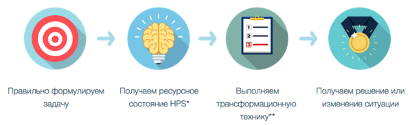

Итак, мы подошли к мечте каждого человека, кто устал от конфликтов и эмоциональных расстройств, и хочет любви и взаимопонимания... Как превратить конфликт в наполненную любовью и уважением беседу? определенным образом на определенные ситуации.  Но критически важно, выполнить эти шаги правильно (если вам важен результат). 1. Какое благо скрыто в негативном поведении, и как его обнаружить? повысить качество своей жизни за 2-3 месяца? Курс ведет ваш покорный слуга, некоторые видеоуроки я буду вести совместно с Константином Пуховым. А автором методики, которая легла в основу курса является Джон Гриндер (один из основателей НЛП). Я обучался у него лично в 2004-м году, и потом в течение года мы с коллегами тестировали эту методику на группах, чтобы убедиться в повторяемости результата у разных людей и замерить изменение показателей мозга. С 2005 года (10 лет) я веду по ней тренинги. Курс выходит 6 июля и состоит из 7 видео-уроков, которые будут появляться по одному в день. Посмотреть их вы можете в любое удобное время. По специальному предложению, действующему до выхода курса (6 июля) в зависимости от выбранного вами варианта участия, вы получаете не только 50%-ю скидку на участие, но и совершенно сумасшедшие бонусы! P.S. Если вы не можете участвовать в эти даты, вы можете воспользоваться специальным предложением, чтобы приобрести курс на самых выгодных условиях, и пройти его когда вам будет удобно. Весь материал сохранится в записи.
Как изменить свое эмоциональное состояние и контролировать ситуацию?
Как вместо раздражения и расстройств начать жить в радости и счастье?Так как же изменить свою жизнь?
Проблема, как вы помните из прошлой статьи, в привычках реагировать
Но, к счастью, вы можете эти привычки изменить.Что нужно сделать?
Вам не нужен для этого коуч, психолог или библиотека книг в голове.
Все что вам нужно сделать, это выполнить 4 шага, которые займут у вас 20-30 минут.
А это потребует от вас не только знания техник, но и трех ключевых навыков.
Поэтому чтобы у вас гарантированно получилось, мы создали видеокурс:
2. Как «выключить» рамки, ограничивающие наше сознание?
3. Как избавиться от всего негативного опыта сразу «оптом»?
4. Как начать использовать нераскрытый потенциал мозга?
5. Как общаться со своей интуицией (бессознательным) как с человеком?
6. Как запустить глобальные изменения в своей жизни и значительноКто ведет курс?
Отзывы участников моих тренингов вы можете посмотреть здесь.
Даты и формат участия
И только в этот раз мы сделаем специальную закрытую онлайн-группу, в которой я каждый день буду отвечать на ваши вопросы по урокам курса в эти 7 дней (с 6 по 13 июля).
А также, только в этот раз я проведу два онлайн-занятия (7 и 13 июля в 20:00), на которых вы сможете получить персональные рекомендации для решения ваших личных ситуаций, и дополнительные техники, если это будет необходимо.
Но это еще не все.С уважением, Егор Булыгин